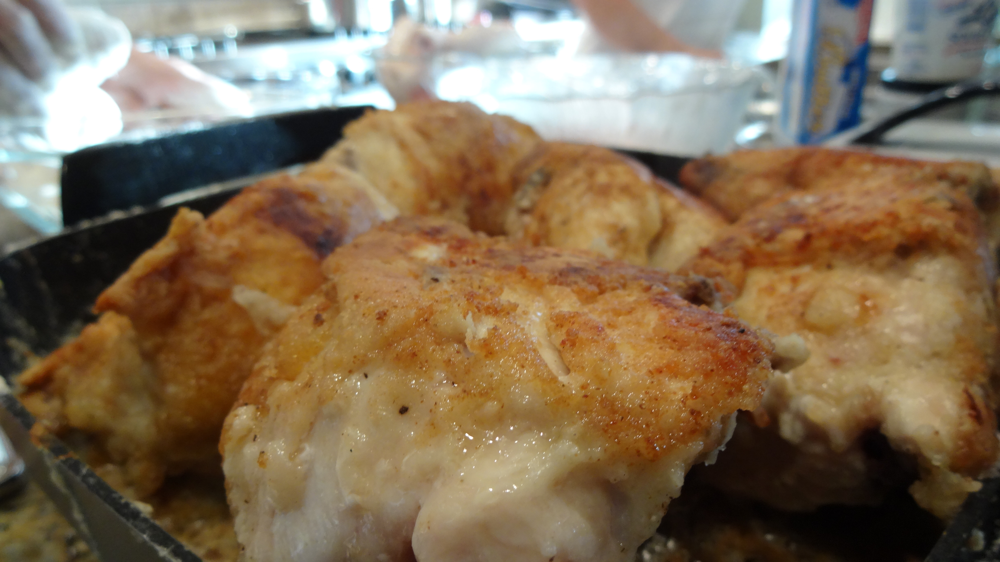
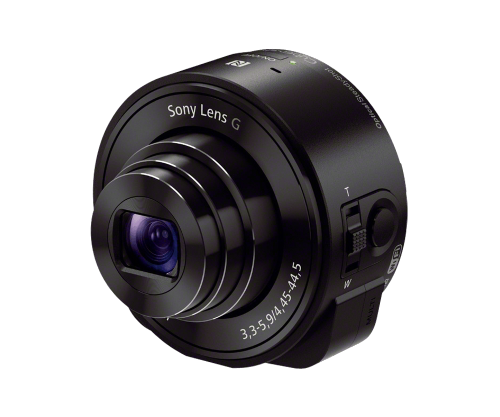

Evan Enfriar Página web
Me gusta tomar fotos
Al igual que los de abajo.


Me gusta esta cámara, porque de la forma en que se conecta a su teléfono.
La Sony Cyber-shot Qx-10 es una cámara impresionante debido a su gran calidad de imagen y cómo portátil es.